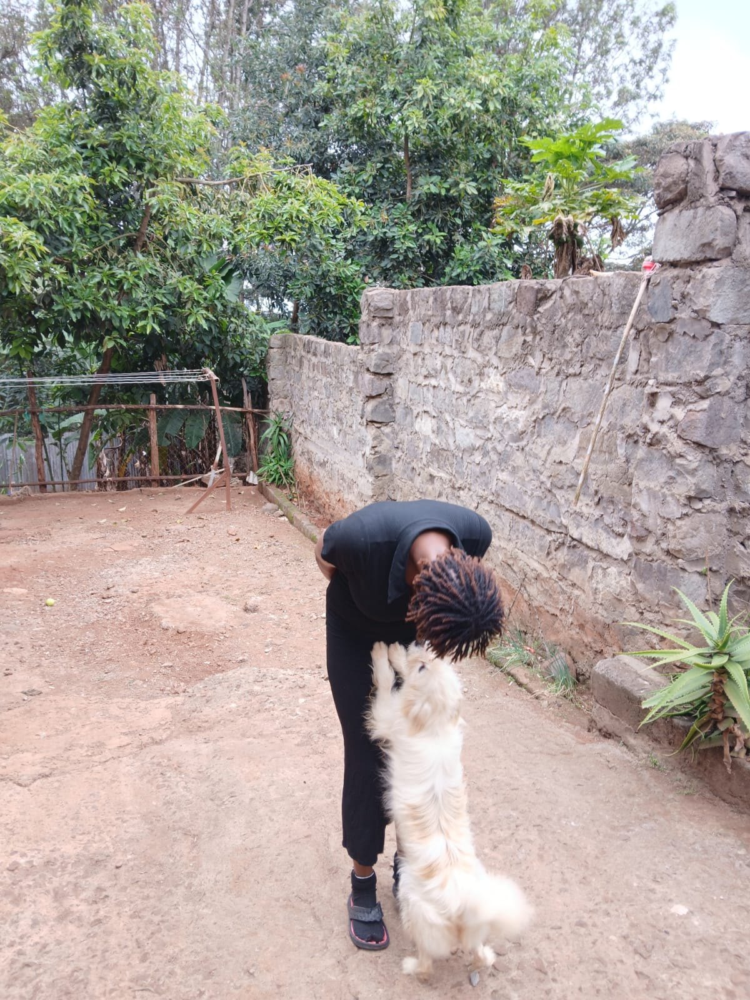
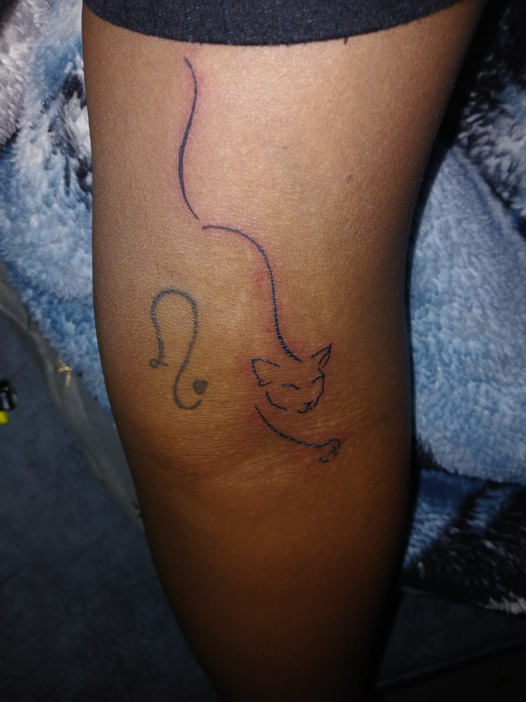
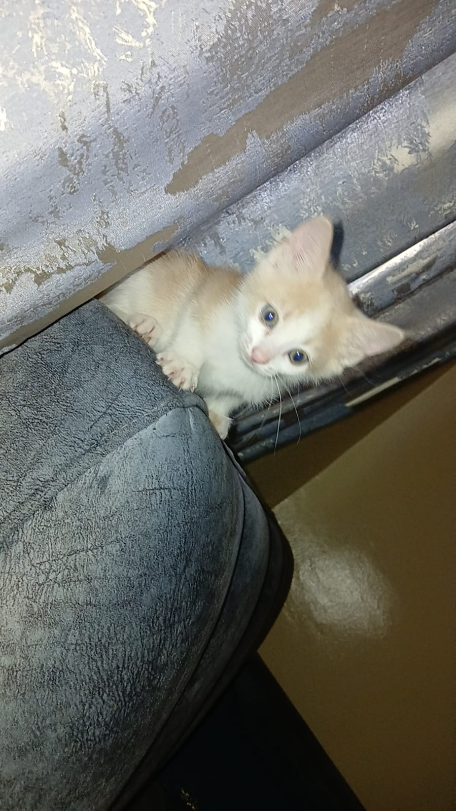

Capture Every Moment
Photography is a powerful way to preserve memories and tell stories that words alone cannot express. Every photograph captures a unique moment in time, allowing us to relive special occasions, celebrate achievements, and remember the people and places that shape our lives. Whether it's a family gathering, a breathtaking landscape, or a simple everyday scene, photographs help us appreciate the beauty around us and keep meaningful experiences alive for future generations. By capturing these moments, we create lasting memories that can inspire, connect, and bring joy for years to come.
Some of My Favourite Photos
My Hair
Hair is a natural feature that enhances a person's appearance and serves as a form of self-expression through different styles, colors, and textures. Here are some of the ways I kept my hair



My tattoos
Tattoos are permanent designs created by inserting ink into the skin. They are a popular form of self-expression, art, and personal storytelling. Every tattoo is a unique piece of art designed to reflect your personality, memories, and creativity.



My Pets
Pets are loyal companions that bring joy, comfort, and unconditional love into our lives. They become cherished members of the family. Every pet has a unique personality, making each day brighter with playful moments, loyalty, and endless affection.



My contact-info
Name : Maureen Nariam
Email : maureennyamari05@gmail.com
Contact : 0745672518